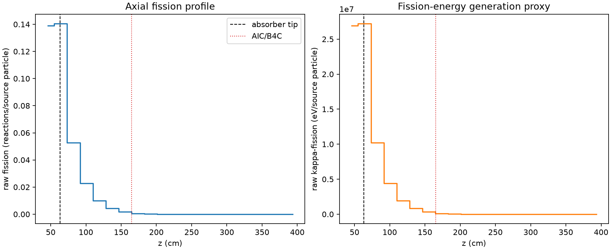
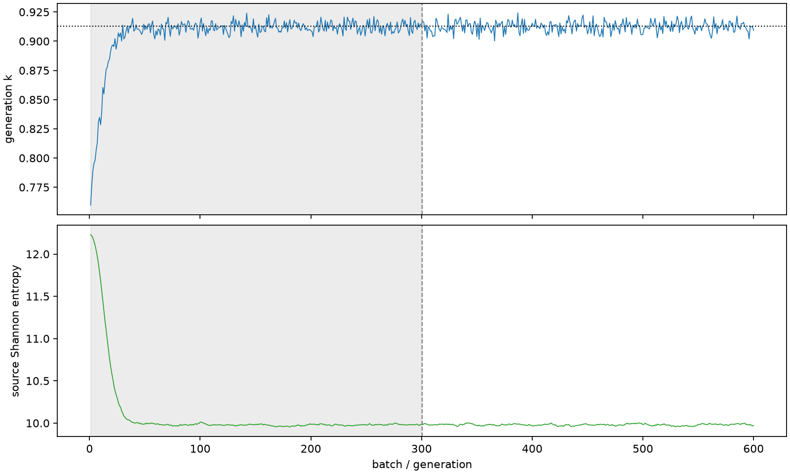

| field | value |
|---|---|
| experiment | V2-STAGE_256_OGRENCI_02-0029 |
| k | 0.9127115285951043 |
| MC standard error | 0.00017909994669125748 |
| seconds | 904.6905715040048 |
| acceptance | not_assessed |
| convergence | review_required |
Completed is output integrity only; physical and statistical review required. Zero tallies do not prove zero production or zero uncertainty.
| diagnostic | value |
|---|---|
| geometric fuel voxels | 5280 |
| zero fission tally voxels | 1331 |
| low signal fuel voxels | 2686 |
| low signal fission share | 0.00013320363747726128 |
| low signal kappa share | 0.00013324990933053266 |
| important fission share | 0.9501346653321433 |
| previous filter included | 2594 |
| duration estimate s | 1562.5173488400023 |
| actual minus estimate s | -657.8267773359976 |
| fission relative MC error | statistics |
|---|---|
| all_geometric_fuel | {"voxels": 5280, "positive_mean_voxels": 3949, "zero_mean_voxels": 1331, "undefined_relative_error_voxels": 1331, "median": 0.06225323654407632, "p95": 0.9210908284225566, "maximum": 1.0000000000000002} |
| low_signal | {"voxels": 2686, "positive_mean_voxels": 1355, "zero_mean_voxels": 1331, "undefined_relative_error_voxels": 1331, "median": 0.539630070512606, "p95": 1.0, "maximum": 1.0000000000000002} |
| important_95pct | {"voxels": 1031, "positive_mean_voxels": 1031, "zero_mean_voxels": 0, "undefined_relative_error_voxels": 0, "median": 0.005009527726770598, "p95": 0.010783668097803172, "maximum": 0.011821638867441754} |
| outside_previous_filter | {"voxels": 2686, "positive_mean_voxels": 1355, "zero_mean_voxels": 1331, "undefined_relative_error_voxels": 1331, "median": 0.539630070512606, "p95": 1.0, "maximum": 1.0000000000000002} |
| kappa_fission relative MC error | statistics |
|---|---|
| all_geometric_fuel | {"voxels": 5280, "positive_mean_voxels": 3949, "zero_mean_voxels": 1331, "undefined_relative_error_voxels": 1331, "median": 0.062131192033750275, "p95": 0.9206702972584919, "maximum": 1.0000000000000002} |
| low_signal | {"voxels": 2686, "positive_mean_voxels": 1355, "zero_mean_voxels": 1331, "undefined_relative_error_voxels": 1331, "median": 0.5383077271504063, "p95": 1.0, "maximum": 1.0000000000000002} |
| important_95pct | {"voxels": 1031, "positive_mean_voxels": 1031, "zero_mean_voxels": 0, "undefined_relative_error_voxels": 0, "median": 0.005002026557046901, "p95": 0.010765375931185968, "maximum": 0.011802750140498218} |
| outside_previous_filter | {"voxels": 2686, "positive_mean_voxels": 1355, "zero_mean_voxels": 1331, "undefined_relative_error_voxels": 1331, "median": 0.5383077271504063, "p95": 1.0, "maximum": 1.0000000000000002} |
| axial bin | fission share | kappa-fission share |
|---|---|---|
| 1 | 0.37406836083500355 | 0.37402734131811677 |
| 2 | 0.3777603145137261 | 0.37775181530005303 |
| 3 | 0.14177831734523352 | 0.1418059197468192 |
| 4 | 0.061356224512411885 | 0.06136857356766018 |
| 5 | 0.026525933180842603 | 0.026531415696287936 |
| 6 | 0.011349257183118269 | 0.011351569946230222 |
| 7 | 0.0046575036948744335 | 0.00465850441123576 |
| 8 | 0.0016477661393255179 | 0.0016482772753799225 |
| 9 | 0.0005696373997417724 | 0.0005697997114467501 |
| 10 | 0.0001877273034774456 | 0.0001877870552073793 |
| 11 | 5.8245993104553876e-05 | 5.8270033712412205e-05 |
| 12 | 2.4715516403939893e-05 | 2.472439235509555e-05 |
| 13 | 9.75348145760207e-06 | 9.756847567510426e-06 |
| 14 | 4.900536989011724e-06 | 4.9017378575352024e-06 |
| 15 | 1.2394812677927401e-06 | 1.2400310730484905e-06 |
| 16 | 9.778059687548108e-08 | 9.783460654756491e-08 |
| 17 | 5.102424964116733e-09 | 5.094390789879168e-09 |
| 18 | 0.0 | 0.0 |
| 19 | 0.0 | 0.0 |
| 20 | 0.0 | 0.0 |
Histories include the inactive-to-active transition at batch 300. kappa-fission approximates fission energy production, not total heat deposition.

